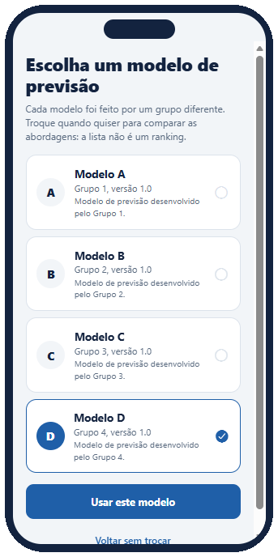
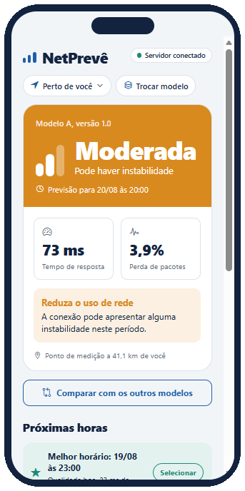
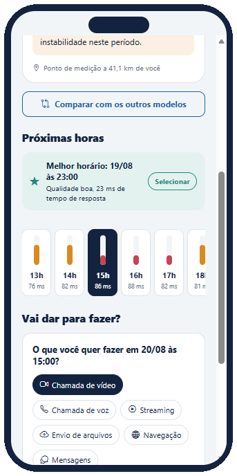
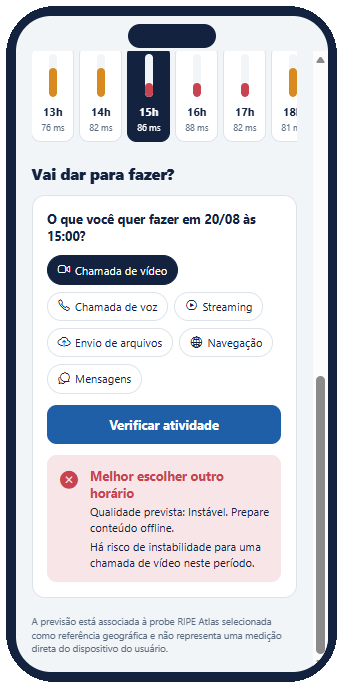
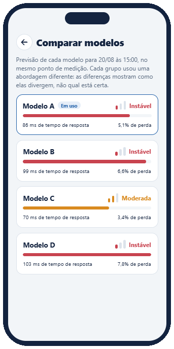

O NetPrevê mostra como deve estar a conexão perto de você nas próximas horas e diz, em linguagem simples, se dá para fazer uma chamada de vídeo, assistir a um streaming ou enviar um arquivo naquele horário.
Próximas horas
Ponto de medição a 41,1 km
20/08, tempo de resposta previsto em cada horário
Melhor horário: 19/08 às 23:00. Qualidade Boa, com 23 ms de tempo de resposta.
Quem estuda ou trabalha online depende da conexão em horários marcados: a aula ao vivo, a reunião com o cliente, o envio de um trabalho no último minuto. Os testes de velocidade mostram como a internet está agora, mas não dizem como ela vai estar daqui a algumas horas.
O NetPrevê responde a essa pergunta antes. Ele usa previsões feitas por modelos a partir de medições de pontos de referência e traduz os números em algo que qualquer pessoa entende: uma palavra, uma cor e um conselho do que fazer.
Quatro passos, do primeiro toque até a resposta que importa.

Cada modelo de previsão foi feito por um grupo diferente. A escolha fica salva no aparelho e pode ser trocada depois.

Com a sua permissão, o app encontra o ponto de medição mais próximo e mostra a qualidade, o tempo de resposta, a perda de pacotes e o que fazer.

A previsão hora a hora aparece em uma faixa, com o melhor horário em destaque. Um toque seleciona o horário que você quer.

Escolha a atividade e toque em verificar. O app responde “Bom momento para isso” ou “Melhor escolher outro horário”.
Em vez de números soltos, a previsão vira uma de três palavras. Elas vêm de duas medidas da rede: o tempo de resposta, que é quanto um sinal leva para ir e voltar, e a perda de pacotes, que é quanto da informação se perde no caminho. A pior das duas decide a qualidade.
No app, a qualidade nunca depende só da cor: a palavra, as barrinhas de sinal e a cor aparecem sempre juntas.
Cada atividade exige uma qualidade mínima. O app compara a previsão do horário escolhido com essa exigência.
| Atividade | Precisa de |
|---|---|
| Chamada de vídeo | Boa |
| Streaming | Boa |
| Chamada de voz | Moderada ou melhor |
| Envio de arquivos | Moderada ou melhor |
| Navegação | Moderada ou melhor |
| Mensagens | Qualquer qualidade |

Na dúvida, compare: o app mostra o que os quatro modelos preveem para o mesmo local e horário, lado a lado, sem eleger um vencedor. As diferenças mostram como as abordagens divergem, não qual está certa.
O produto tem duas partes: o aplicativo, que o usuário usa, e a API, que guarda as previsões e aplica as regras de qualidade.
React Native com Expo. Roda no Android, no iPhone e no navegador. Um único serviço conversa com a API, com tempo limite de 60 segundos e mensagens de erro que dizem o que fazer.
React Native, Expo, JavaScript, expo-location
Java com Spring Boot, em camadas: o controller recebe o pedido, o service aplica as regras de classificação e o repository lê e valida os dados.
Java 17, Spring Boot, Maven, REST em /api/v1
Contrato documentado com Swagger, testes automatizados com JUnit e Mockito e cobertura medida com JaCoCo. O README de cada repositório explica como rodar.
Swagger, JUnit, Mockito, JaCoCo, GitHub, Jira
Os dados são de exemplo. Nesta versão acadêmica, a API usa previsões fixas e fictícias. A previsão é ligada a um ponto de medição de referência e não mede a rede do seu aparelho, e o app mostra esse aviso na tela.